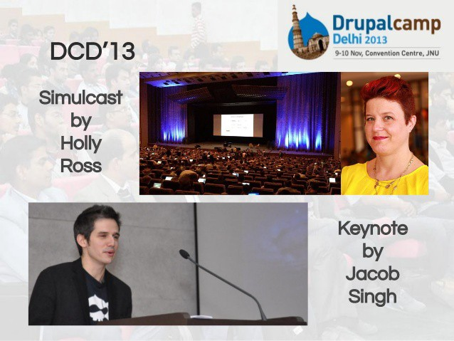

I didn’t make any big announcement about it, because I’m not the big announcement type. More the slip out the back, change your number and grow a mustache type. Anyway, I finally left my job at Acquia after 8 years (5 months ago).
I watched an uncertain startup with products no one was buying and VC money burning up turn into a global powerhouse. A lot of things changed. My life changed pretty dramatically a few times.
I moved across the world twice, I became a father, I became a single dad. Friends came and went, relationships changed, the world changed, Donald Trump is a thing… it’s been a wild journey.

My work was anything but static. I started out as a long-haired engineer, hacking away in my sweaty home office in New Delhi. I became an Agile optimist, evangelist, a skeptic, then a realist. I learned I was a good teacher. I became a public speaker and spoke to crowds in dozens of cities around the world. I made hundreds of friends and a few enemies online (but eventually enemies also became friends). It was a life changing experience.
Then I moved to India and learned about business. I wrote business plans, I cold called, I pressed slacks and trousers, I got on planes, off planes, into hotels, into cabs, autos, trains, cafes, meeting rooms, bars. Some deals closed, many didn’t. I hired, I fired and counseled, I made shit up, it worked most of the time. I built a really kick ass team, they love me to bits and hate me a bit too — depends on the day. That’s being a boss I discovered.
Now, I’m just a father, a brother, a friend, and a son. I’m trying to make sense of what the next 50 years has in store.
What about the last 5 months? Well, my intention was to stay away from work. I wanted to learn — to pick up all the things I wanted to do and never had the time and space to pursue. I had a list, I had plans, I told people, I made goals… Turns out I’m not as self-disciplined, smart and hardworking as I thought. No, Jacob U did not provide the concrete results I was hoping for, but I have managed to accomplish a few things:
- Made a simple robot
- Taking singing lessons regularly — with the amazing Lucia
- Picked up a little more jazz guitar
- Learned how to make mobile apps in ReactJS
- Got pretty solid at rock climbing
- Learned one Django Rheinhart solo
- Learned how to swing a golf club
- Learned a bit of drawing and cartooning
- Learned to cook a bunch of new stuff
But more than that, I’ve focused hard on Fatherhood, Fitness and Friends (in that order). It’s been great to put first things first without compromise. I didn’t make enough money in corporate land to avoid having a job forever, but I know when I go back to work, I’m going to be better at balance than I have been.
Speaking of, I am starting to look around for my next gig. I’m not sure if that’s a full time thing or a part time one, but here’s what I’m looking for in case anyone has some awesome opportunity or connections to share:
- Purpose: It’s gotta be something that even on the bad days when I’m pissed at a coworker, pessimistic about our chances, frustrated at a vendor, etc.. I still want to go to work and be my best self because I really, really give a shit about what we’re trying to do.
- Customer facing: I’ve realized I’m a capable leader and a good engineer / engineering manager, but I’m much better at sales, product strategy, marketing, etc.
- Not just operational: I’m lousy at maintaining things. Really, I don’t like keeping spreadsheets up to date, managing budgets, utilization spreadsheets, etc. I can do it, any leader needs to, but it isn’t what my job should be about.
- In Delhi: Zoya (my daughter) is here, so I’m here. End of story.
- Early stage or “intrapreneurial”: I want to be a big part of something and I don’t want to fit into a huge machine.
That’s about it for me. If you know of anything, or you want to shoot your network an email, here’s a quick blurb about me. Much appreciated!
Jacob is a 15+ year veteran of the digital space. He has succeeded in both technical and sales roles as an entrepreneur, consultant, contributor, and director in both the US and India. He’s a strong communicator and is relentlessly honest and transparent. Right now, he’s looking for opportunities with VCs or to help an early stage startups grow in a product, engineering management or sales role. You can find him at https://www.linkedin.com/in/jacobsingh and http://jacobsingh.name.

{kind=link}